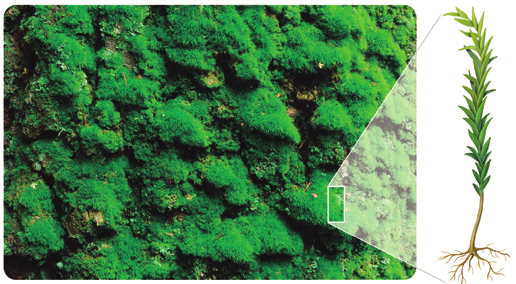
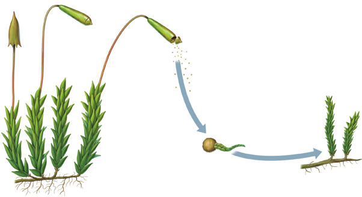
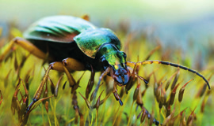

Se incluyen en este grupo plantas propias de sitios húmedos, sin flores ni semillas, que se reproducen a través de esporas en algún momento de su vida.
2.1 Briófitas
Los representantes más conocidos de las briofitas son los musgos. Se trata de pequeñas plantas que pueden colonizar cualquier territorio excepto el mar y los desiertos extremos. Este grupo presenta las siguientes características:
Al carecer de vasos conductores, toman el agua y las sales minerales por cualquier parte del cuerpo a través de una fina cubierta que envuelve la planta, denominada cutícula.
No tienen verdaderas hojas, tallos ni raíces, aunque cuentan con unas estructuras similares denominadas filoides, cauloides y rizoid.
Importancia de los musgos en los ecosistemas
Los musgos sirven de protección y alimento a muchos animales y evitan la erosión del suelo, razones por las que son fundamentales en los ecosistemas.

Musgo y su estructura
La reproducción de los musgos
Durante la época de reproducción, crecen en los cauloides unas estructuras, llamadas cápsulas, llenas de esporas, que son las células reproductoras.
Cuando las esporas terminan su desarrollo, las cápsulas se abren, las esporas salen y el viento se encarga de transportarlas a otros lugares.
Si las condiciones de humedad son adecuadas, las esporas germinan y originan nuevos musgos.

Ciclo de vida de un musgo

Cerca de un escarabajoDiseño de línea abstracta